第 2 章 · WEEK 10 · TRANSACTION MANAGEMENT
事务与调度
Week 10 整节课：事务和 ACID、并发会出的问题、怎么判断一个调度对不对、出了事能不能撤回。
1 什么是事务（transaction）
一件业务上的事，在数据库里往往是好几步操作。课件的例子：卖出 100 件商品，要先把库存减 100，再把应收账款加 500。如果第一句 UPDATE 执行完、第二句还没执行时系统崩溃，库存少了但钱没记上，数据库就错了。
所以把这几步包成一个 transaction：BEGIN TRANSACTION … COMMIT。它是一个原子操作：要么全部做完，要么像什么都没发生过。
- BEGIN TRANSACTION：之后的修改先只做在内存（working storage）里。
- COMMIT：所有修改正式生效，写回磁盘。
- ROLLBACK / ABORT：所有修改作废，内存里的临时数据丢掉。
DBMS 不关心你的程序在算什么，它只看到一串 read 和 write。所以课件说：a transaction is a DBMS's abstract view of a user program: a sequence of reads and writes.

细化讲解
为什么要并发
磁盘读写很慢，等磁盘的时候 CPU 是闲着的，所以 DBMS 同时处理多个用户的事务，把它们的操作交错（interleave）执行。每个用户都以为只有自己在用系统。带来的两个问题就是这一章和后两章的主题：交错会不会把数据弄错（concurrency control），中途崩溃怎么办（recovery）。
事务的状态图（课件第 18 页）
Active（正在读写）→ end transaction → Partially Committed → commit → Committed → Terminated。在 Active 或 Partially Committed 时出问题就 abort，进入 Failed，回滚后结束。
课件第 4–12 页用一张订单的流程图演示“一个业务活动 = 多个数据库操作”，都是图，这里放出来供你翻看。
2 ACID 四个性质
| 性质 | 意思 | 靠什么保证 |
|---|---|---|
| Atomicity 原子性 | 事务里的操作要么全做，要么全不做 | Begin、Commit / Rollback 命令 |
| Consistency 一致性 | 事务把数据库从一个一致的状态带到另一个一致的状态 | 中途可以暂时不一致，但 commit 时所有约束都必须满足 |
| Isolation 隔离性 | 事务之间互不干扰；没做完的事务的中间结果，别的事务不应该看到 | Concurrency control（Week 11） |
| Durability 持久性 | 已经 commit 的结果永久保存，之后出故障也不能丢 | Recovery management（Week 12） |
最难的是 Isolation。最理想的隔离是让事务一个接一个地执行，但系统有上百万用户，不可能排队。所以目标变成：允许交错，但结果要和排队执行一样。这个性质叫 serializability。
细化讲解
Granularity（粒度）：一个 data item 可以是一个字段、一条记录、几条记录，甚至整张表。后面的方法和粒度无关。对一个 data item X 只有两种操作：read(X) 和 write(X)。
3 Schedule 和它的记法
Schedule（也叫 history）：多个事务的操作交错在一起后的执行顺序。要求只有一条：每个事务自己内部的操作顺序不能变。
| 符号 | 含义 |
|---|---|
r1(X) | 事务 T1 读 X |
w2(X) | 事务 T2 写 X |
c1 | T1 commit |
a4 | T4 abort（回滚） |
例如 S: r1(A); w2(A); c2; w1(A); c1; w3(A); c3; 意思是：T1 先读 A，然后 T2 写 A 并提交，T1 再写 A 并提交，最后 T3 写 A 并提交。Schedule 只记录 read、write、commit、abort 四种操作，中间的计算（比如 X = X + 100）不写。
考题会问 “What is a schedule?”，可以这样答：
A schedule (history) is the order of execution of the operations from various concurrent transactions. The operations of different transactions may be interleaved, but the operations of each transaction must appear in the same order as in the original transaction.
4 交错会出的四种问题
四种问题都要能说出定义，并能用一个 schedule 举例。Lost Update 是考得最多的（2023 Q3，10 分）。
| 问题 | 一句话 | 课件的例子 |
|---|---|---|
| Lost Update | 两个事务都读了旧值，各自计算后先后写回，后写的把先写的覆盖了 | r2(X); r1(X); w2(X); w1(X); c2; c1 |
| Dirty Read（Uncommitted Dependency） | 读到了别人还没 commit 的值，而那个事务后来 abort 了 | r4(X); w4(X); r3(X); a4; w3(X); c3 |
| Incorrect Summary | 一个事务在做求和，另一个事务同时在改其中的数据，求和读到了一半改完、一半没改的数据 | r5(X); r6(X); w5(X); r6(Y); r5(Z); w5(Z); c5; r6(Z); c6 |
| Unrepeatable Read | 同一个事务把同一个数据读了两次，两次之间被别的事务改了，两次读到的值不一样 | r7(X); r8(X); w8(X); r7(X); w7(X) |
用数字看 Lost Update（课件第 30 页）
balx 一开始是 100。T2 要加 100，T1 要减 10。正确结果应该是 190。
| 时间 | T1 | T2 | 数据库里的 balx |
|---|---|---|---|
| t2 | read(balx) 读到 100 | 100 | |
| t3 | read(balx) 读到 100 | 100 | |
| t4–t5 | 算出 100 − 10 = 90 | 算出 100 + 100 = 200 | 100 |
| t6 | write(balx) | 200 | |
| t7 | write(balx) | 90，T2 的更新丢了 |
关键：T1 写回的 90 是用旧值 100 算出来的，它根本没看到 T2 写的 200，于是把 200 覆盖掉了。
细化讲解
Dirty Read 的数字（课件第 31 页）
T4 把 balx 从 100 改成 200，还没 commit；T3 读到 200；T4 随后 rollback，数据库恢复成 100；T3 用它读到的 200 减 10，写回 190。但 200 这个值从来没有正式存在过，正确结果应该是 90。
Incorrect Summary 的数字（课件第 32 页）
x = 100，y = 50，z = 25。T5 把 x 减 10、z 加 10（总和不变，应该是 175）。T6 求和：它读 x 时 x 还是 100，读 z 时 z 已经变成 35，于是算出 100 + 50 + 35 = 185，多了 10。
System log（课件第 34 页）
日志记录每个事务做了什么：[start T]、[write T, x, old value, new value]、[read T, x]、[commit T]、[abort T]。有了旧值，才能在需要时把事务的影响撤销（undo）。[commit T] 是事务成功完成的标志，叫 commit point。日志在 Recovery 一章是主角。
真题：2023 Q3（10 分）
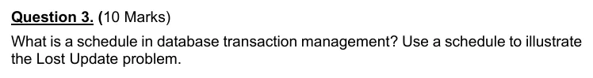
AI 讲解，非官方10 分的题怎么答
分三块写：定义、一个带数值的 schedule、解释。10 分的题只写一句话不够。
A schedule is the order of execution of operations (read, write, commit, abort) from various concurrent transactions; operations of each transaction keep their original order.
The Lost Update problem occurs when a transaction is allowed to overwrite an update of a data item without referring to the new value held in that data item.
Example: S: r2(X); r1(X); w2(X); w1(X); c2; c1. Initially X = 100. T2 adds 100 and T1 subtracts 10. Both read X = 100. T2 writes X = 200. Then T1 writes X = 90, which is computed from the old value 100. The update of T2 is lost. The correct result of any serial execution is 190.
把上面第 4 节的那张时间表也画上，最稳。
例题：Tutorial 10 Exercise 1
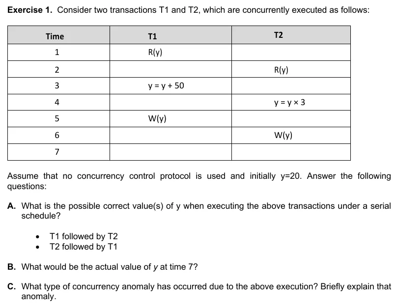
官方答案Tutorial 10 Exercise 1 Solution
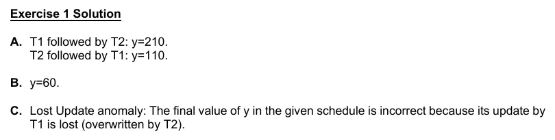
讲解：T1 然后 T2：(20 + 50) × 3 = 210。T2 然后 T1：20 × 3 + 50 = 110。两个都是“正确”的值，因为串行执行永远算对，只是顺序不同结果不同。题目的交错里，两个事务都读到 20；T1 写 70，T2 再写 20 × 3 = 60。60 不等于 210 也不等于 110，T1 的更新丢了，所以是 Lost Update。
5 冲突操作（conflicting operations）
两个操作冲突，要同时满足三个条件：
- 属于不同的事务；
- 访问同一个 data item；
- 至少有一个是 write。
课件第 35 页的六个 case，自己先判断再看答案：
| Case | 操作 | 冲突吗 | 原因 |
|---|---|---|---|
| 1 | r1(X); w2(X) | 冲突 | 不同事务，同一个 X，有一个写 |
| 2 | r1(X); w1(X) | 不冲突 | 同一个事务 |
| 3 | r1(X); r2(X) | 不冲突 | 两个都是读 |
| 4 | w1(X); w2(Y) | 不冲突 | 不是同一个 data item |
| 5 | w1(X); w2(X) | 冲突 | 两个写 |
| 6 | w1(Y); r2(Y) | 冲突 | 写和读 |
冲突的意思是：这两个操作谁先谁后会影响结果，所以它们的先后顺序不能随便换。不冲突的操作换顺序没有影响。
6 Serial、Serializable、Conflict Serializable
- Serial schedule：事务一个做完再做下一个，没有任何交错。n 个事务有 n! 种 serial schedule（3 个事务有 6 种）。Serial 一定正确，但实际中不可接受，因为太慢。
- Serializable schedule：有交错，但结果和某一个 serial schedule 相同。
- Conflict serializable schedule：有交错，但所有冲突操作的先后顺序，和某一个 serial schedule 里的一致。这是考试实际要你判断的那种。
课件第 47 页的例子：
S1: r1(X); w1(X); r1(Y); w1(Y); r2(X); w2(X);T1 全做完才轮到 T2，是 serial。S2: r1(X); w1(X); r2(X); w2(X); r1(Y); w1(Y);有交错，是 non-serial。但 T2 只碰 X，而且是在 T1 写完 X 之后，所以结果和 S1 一样，是 serializable。
细化讲解
不 serializable 的例子（课件第 49 页）
X = 500，Y = 500。T1 从 X 转 100 到 Y；T2 往 X 存 50。无论 T1 先还是 T2 先，结果都是 X = 450，Y = 600。但如果两个事务都先读了 X = 500，T1 写回 400，T2 再写回 550，最后是 X = 550，Y = 600，T1 扣的 100 丢了。这个交错和任何 serial 的结果都不同，所以不 serializable。
怎样才不出错（课件第 50 页）
- 两个事务都只读同一个数据：不冲突，顺序无所谓。
- 两个事务读写的是不同的数据：不冲突，顺序无所谓。
- 一个事务写某个数据，另一个事务读或写同一个数据：顺序很重要。
7 Precedence Graph：判断 conflict serializable 的方法
画法四步：
- 每个事务画一个节点。
- 从左到右看 schedule，找出每一对冲突操作。
- 冲突里先做的是 Ti、后做的是 Tj，就画一条边 Ti → Tj。三种情况会画边：Ti 写 X 之后 Tj 读 X；Ti 读 X 之后 Tj 写 X；Ti 写 X 之后 Tj 写 X。
- 看图里有没有环（cycle）。没有环 ⇔ conflict serializable。
没有环时，按箭头方向排出的顺序（topological sort）就是等价的 serial schedule。Ti → Tj 的意思是“Ti 必须排在 Tj 前面”；如果同时还有 Tj → Ti，两个要求互相矛盾，所以有环就不行。
下面是课件第 55 页的例子，工具会列出每一对冲突、画出图并给出结论：
边只有 T2 → T1 和 T1 → T3，没有环，等价的 serial 顺序是 T2, T1, T3，和课件的答案一致。
细化讲解
有时不止一个答案（课件第 56 页）
T1 和 T2 之间没有边，只要求它们都在 T3 之前，所以 T1, T2, T3 和 T2, T1, T3 都是对的。
有环的例子（课件第 54 页）
r1(A) 在 w2(A) 之前给出 T1 → T2；w2(A) 在 w1(A) 之前给出 T2 → T1。T1 和 T2 之间成环，不是 conflict serializable。
实际的 DBMS 不做这个检查（课件第 57 页）
DBMS 并不会事先把 schedule 排好再检查。它用一套协议（protocol），也就是规则，让事务照着做，照着做出来的 schedule 自然是 serializable 的。下一章的 locking 和 timestamp 就是这样的协议。
自己试：Precedence Graph 工具
在下面输入任何 schedule（格式 r1(X); w2(X); c1），或者从下拉里选一个课件或 tutorial 的例子。
例题：Tutorial 10 Exercise 2
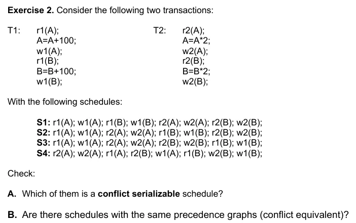
官方答案Tutorial 10 Exercise 2 Solution
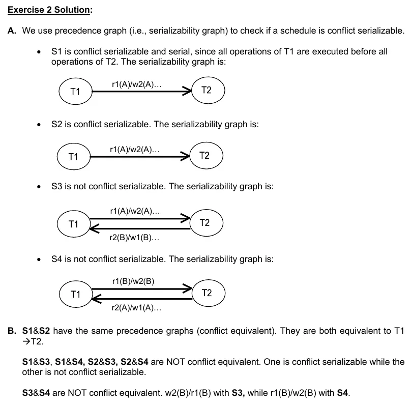
讲解：S1 和 S2 里，A 和 B 上都是 T1 的操作在 T2 之前，只有 T1 → T2 一个方向，没有环。S3 里 A 上是 T1 先（T1 → T2），B 上是 T2 先（T2 → T1），成环。S4 里 r2(A) 在 w1(A) 前（T2 → T1），r1(B) 在 w2(B) 前（T1 → T2），成环。用上面的工具选对应的例子可以看到每一条边。这四个结论已经用工具的程序核对过，和官方答案一致。
B 问：conflict equivalent 要求每一对冲突操作的顺序都一样。S3 和 S4 的图看起来都是双向边，但 S3 里是 w2(B) 在 r1(B) 前，S4 里是 r1(B) 在 w2(B) 前，顺序不同，所以不等价。
真题：2025 Q10（4 分）
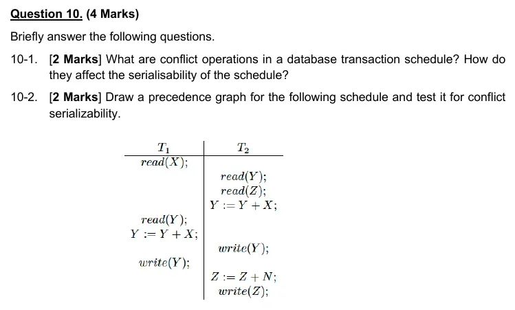
AI 讲解，非官方2025 Q10 两问
10-1
Two operations in a schedule are conflicting if (1) they belong to different transactions, (2) they access the same data item, and (3) at least one of them is a write. The order of conflicting operations affects the result, so it cannot be swapped. A schedule is conflict serializable only if the order of all its conflicting operations is consistent with some serial schedule, i.e., its precedence graph has no cycle.
10-2 先把表格从上到下抄成一行（计算步骤不算）：r1(X); r2(Y); r2(Z); r1(Y); w2(Y); w1(Y); w2(Z)。
冲突都在 Y 上：r1(Y) 在 w2(Y) 之前，得 T1 → T2；r2(Y) 和 w2(Y) 都在 w1(Y) 之前，得 T2 → T1。X 只有 T1 读，Z 只有 T2 用，没有冲突。图里有环 T1 → T2 → T1，所以不是 conflict serializable。
8 Recoverable、Cascadeless、Strict
上一节管的是“交错后结果对不对”。这一节管另一件事：有事务 abort 时，能不能干净地撤回。三个等级，一级比一级严：
| 等级 | 规则 | 违反时的样子 |
|---|---|---|
| Recoverable | 如果 T2 读了 T1 写的数据，那么 T2 必须在 T1 commit 之后才能 commit | T2 读了 T1 的脏数据并先 commit 了，T1 后来 abort。T2 已经 commit，撤不回来 |
| Cascadeless | 只能读已经 commit 的事务写的数据（不许 dirty read） | T2 读了 T1 没提交的数据，T1 abort 时 T2 也得跟着 abort，这叫 cascading rollback |
| Strict | 一个数据被 T1 写过之后，在 T1 commit 或 abort 之前，别的事务既不能读也不能写它 | T2 覆盖了 T1 没提交的写，T1 abort 时恢复旧值，会把 T2 写的也冲掉 |
包含关系：Strict ⊂ Cascadeless ⊂ Recoverable。是 strict 就一定 cascadeless，是 cascadeless 就一定 recoverable。
课件第 38 页的例子 S: r1(X); w2(X); w1(X); r1(X); c2; c1;：T1 最后读的 X 是它自己刚写的，没有人读别人未提交的数据，所以它是 recoverable 的，尽管它有 lost update 问题。Recoverable 和 serializable 是两回事，一个 schedule 可以只满足其中一个。
自己试：三个等级的检查工具
例题：Tutorial 10 Exercise 6（2023 Q4、2024 Q4 原题）
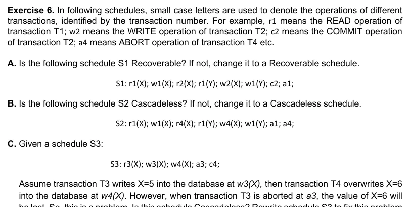
这道 tutorial 题和 2023 Q4 的前三问、2024 Q4 的前两问一字不差。
官方答案Tutorial 10 Exercise 6 Solution
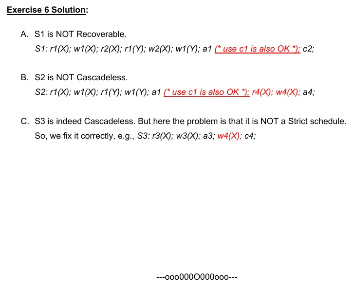
A 的讲解：T2 的 r2(X) 读的是 T1 写的、还没提交的 X。然后 T2 先 commit（c2），T1 后来 abort（a1）。T2 基于一个作废的值提交了，无法撤回，所以不 recoverable。改法：让 T1 先结束，T2 再 commit，也就是把 c2 挪到最后。
说明官方答案写的是 “a1 (c1 also OK); c2”。按教材的严格定义，T1 如果是 abort，读过它数据的 T2 也应该跟着 abort；T1 是 commit（c1; c2）时才是标准的 recoverable。上面的工具按教材定义检查，所以选 “改成 c1; c2” 那一项显示 recoverable。考试照官方答案的写法写，并注明 c1 也可以。
B 的讲解：r4(X) 读了 T1 未提交的 X，所以不 cascadeless：T1 abort 时 T4 只能跟着 abort。改法：让 T4 等 T1 结束（a1）之后再读 X。
C 的讲解：没有任何事务读别人未提交的数据，所以是 cascadeless。但 w4(X) 覆盖了 T3 未提交的写，所以不 strict。改法：让 T4 等 T3 结束（a3）之后再写 X。
细化讲解
真题对照
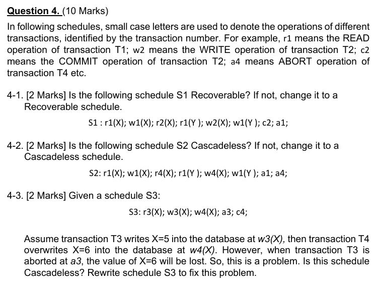
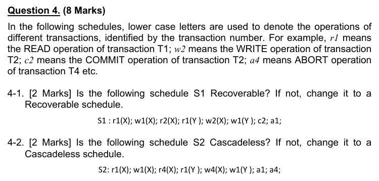
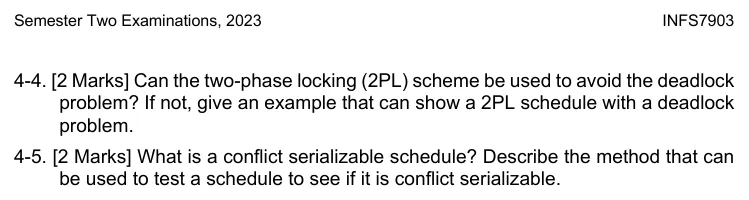
AI 讲解，非官方2023 Q4-5 / 2024 Q4-4：什么是 conflict serializable，怎么检查
A schedule is conflict serializable if it is conflict equivalent to some serial schedule, i.e., the order of every pair of conflicting operations is the same as in that serial schedule.
Test: build a precedence graph (serialization graph). Create a node for each transaction. Draw an edge Ti → Tj if an operation of Ti conflicts with and precedes an operation of Tj (Ti writes X before Tj reads X; Ti reads X before Tj writes X; Ti writes X before Tj writes X). The schedule is conflict serializable if and only if the graph has no cycle. A topological sort of the graph gives an equivalent serial schedule.
9 进阶变式题
三道题的结论都由本页工具的程序算出。程序先用 Tutorial 10 Exercise 2 和 Exercise 6 的官方答案核对过。
变式 1 三个事务
r1(X); r2(Y); w1(Y); r3(Z); w2(Z); w3(X); c1; c2; c3
画 precedence graph，判断是否 conflict serializable。
程序生成的答案变式 1
三条边 T2 → T1、T3 → T2、T1 → T3 首尾相接成一个三个节点的环。任何两个事务之间都没有双向边，但整体仍然有环，所以不是 conflict serializable。要点：环不一定只在两个事务之间。
变式 2 两种性质一起问
r1(A); w2(A); r3(A); w1(B); r2(B); w3(B); c1; c2; c3
是否 conflict serializable？是否 recoverable、cascadeless、strict？
程序生成的答案变式 2
边 T1 → T2、T2 → T3、T1 → T3，没有环，等价于 T1, T2, T3。r3(A) 读的是 T2 未提交的写，r2(B) 读的是 T1 未提交的写，所以不 cascadeless；但提交顺序 c1, c2, c3 正好是“被读的先提交”，所以 recoverable。
细化讲解
变式 3 连环依赖，要求改到 strict
w1(X); r2(X); w2(Y); r3(Y); c3; c2; c1
(a) 是否 recoverable？(b) 只调整 commit 的位置，把它改成 recoverable。(c) 再改成 strict。
程序生成的答案变式 3
(a) 不 recoverable。T2 读了 T1 的 X，T3 读了 T2 的 Y，提交顺序却是反的：T3 最先提交。
(b) 把提交顺序改成 c1; c2; c3：w1(X); r2(X); w2(Y); r3(Y); c1; c2; c3。程序检查结果：recoverable，但仍然不 cascadeless（T1 如果 abort，T2、T3 会连环回滚）。
(c) 每个事务等前一个提交后再读：w1(X); c1; r2(X); w2(Y); c2; r3(Y); c3。程序检查结果：recoverable、cascadeless、strict 都满足。
切换到“细化讲解”可以看到变式 3 和真题对照。
10 本章小结
- Transaction 是一串 read 和 write，要么全做要么全不做，必须满足 ACID。
- Schedule 是多个事务的操作交错后的执行顺序。
- 交错可能出四种问题：Lost Update、Dirty Read、Incorrect Summary、Unrepeatable Read。
- 冲突操作：不同事务、同一数据、至少一个写。
- Conflict serializable ⇔ precedence graph 没有环。
- Strict ⊂ Cascadeless ⊂ Recoverable，管的是 abort 时能不能撤回。
11 小测
键盘：← → 在小节之间翻页。